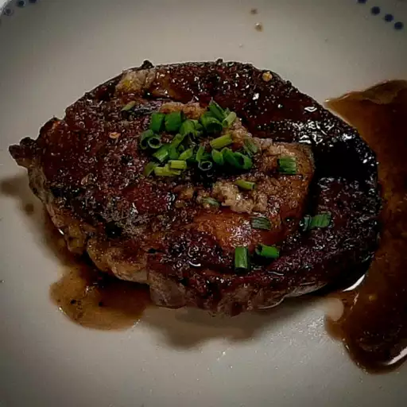

Cast iron pan seared steak

Description
If you're making steaks inside, you've come to the right place. This technique for cooking steak in a cast iron skillet is unbeatable. What sets it apart? It starts on the stove in a cast iron skillet, but you'll finish the steak in the oven. The stovetop-to-oven method produces steaks with a deeply caramelized crust and a tender, perfectly cooked interior.
Ingredients
- 2 (6 ounce) beef top sirloin steaks
- 2 cups orange juice
- 1 cup apple cider vinegar
- ½ cup Worcestershire sauce
- 1 ½ tablespoons steak seasoning (such as Fiesta Brand® Uncle Chris'), or to taste
- freshly ground black pepper to taste
- 2 teaspoons olive oil
- sea salt to taste
Directions
- Step 1
Place steaks side by side in large casserole dish. Add orange juice, cider vinegar, and Worcestershire sauce. Marinate, uncovered, in the refrigerator for 45 minutes.
- Step 2
Preheat the oven to 425 degrees F (220 degrees C).
- Step 3
Remove casserole dish from refrigerator. Cover steaks with plastic wrap and let allow to come to room temperature, at least 15 minutes.
- Step 4
Place steaks on a clean work surface and generously rub with steak seasoning and black pepper.
- Step 5Heat olive oil in a cast-iron skillet over high heat.
- Step 6Cook steaks in the hot skillet until lightly browned on the bottom, 2 1/2 minutes. Flip and cook until browned on the other side and red in the center, about 2 minutes more. Transfer skillet with the steaks to the oven.
- Step7Bake in the preheated oven until steaks are firm and reddish-pink to lightly pink in the center, 8 to 10 minutes. An instant-read thermometer inserted into the center should read from 130 degrees F (54 degrees C) to 140 degrees F (60 degrees C).
- Step8Remove steaks from oven; season with salt. Let rest for 5 minutes before serving.